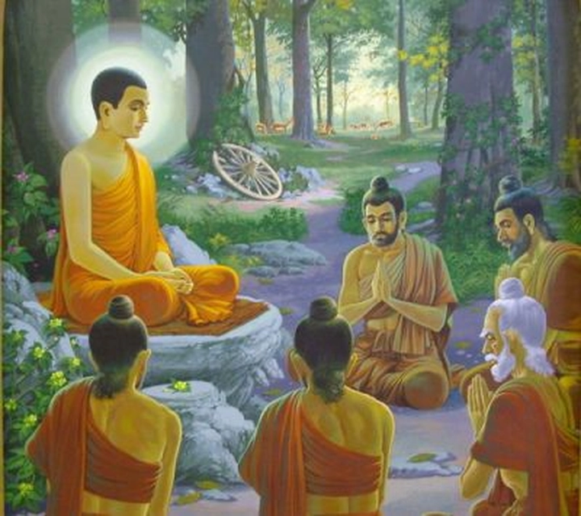
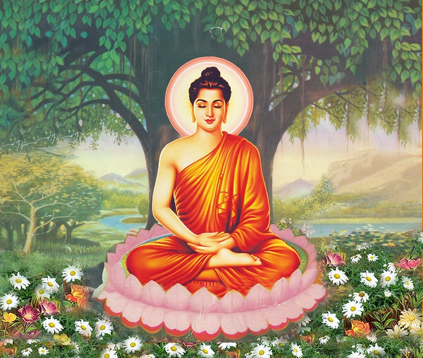
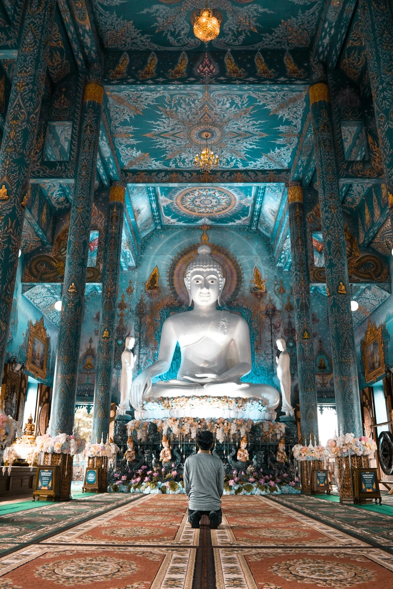
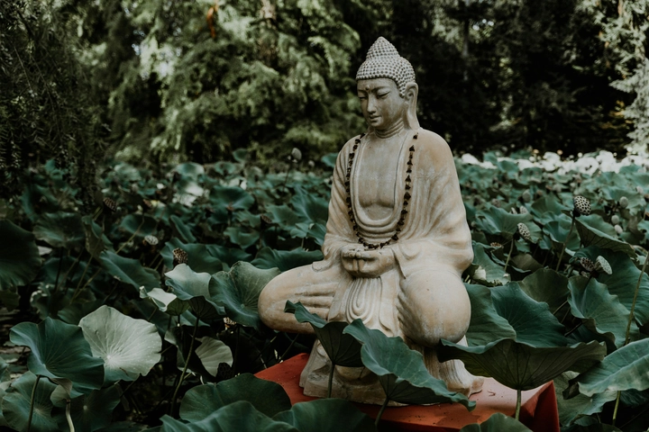

Lịch sử của Đức Phật
Đức Phật Thích Ca Mâu Ni, một trong những nhân vật vĩ đại nhất trong lịch sử nhân loại, không chỉ là biểu tượng tâm linh mà còn là nguồn cảm hứng về trí tuệ và lòng từ bi.
Cuộc đời Ngài trải qua nhiều giai đoạn từ sinh ra trong nhung lụa hoàng tộc, chứng kiến khổ đau của đời sống, đến hành trình tu tập khổ hạnh và giác ngộ dưới cội bồ đề. Hành trình ấy không chỉ thay đổi cuộc đời bản thân Ngài mà còn mở ra con đường giác ngộ cho hàng triệu chúng sinh, để lại di sản sâu sắc cho nhân loại và nền văn minh thế giới.
1. Quá trình sinh ra của Thái tử Siddhartha Gautama
Thái tử Siddhartha Gautama, người sau này trở thành Đức Phật, sinh ra khoảng thế kỷ 5–4 trước Công Nguyên tại vương quốc Kapilavastu (nay thuộc biên giới Ấn Độ–Nepal). Cha ngài là vua Tịnh Phạn, mẹ là hoàng hậu Maya.
Truyền thuyết kể rằng, ngay trước khi sinh, hoàng hậu Maya mơ thấy một con voi trắng bước vào bụng bà, được coi là điềm báo về sự xuất hiện của một bậc vĩ nhân sẽ đem lại giác ngộ cho thế gian. Khi sinh, Siddhartha được cho là đi những bước đầu tiên và tuyên bố rằng ngài sẽ trở thành một bậc vĩ nhân, hoặc là vua tối thượng, hoặc là bậc giác ngộ.

Gia đình hoàng tộc rất tự hào, và vua Tịnh Phạn mong muốn ngài kế thừa ngai vàng. Để bảo vệ ngài khỏi những nguy cơ và khổ đau của thế giới bên ngoài, Siddhartha được nuôi dưỡng trong cung điện tráng lệ với đủ mọi tiện nghi và tình yêu thương, nhưng cũng bị che chắn khỏi thực tại của đời sống, đặc biệt là những cảnh tượng về bệnh tật, già nua và cái chết.
Sinh ra trong một môi trường giàu sang nhưng với điềm báo thiêng liêng, Siddhartha mang trong mình cả tiềm năng vĩ đại và số mệnh đặc biệt, định hình những bước đi đầu tiên dẫn tới con đường giác ngộ sau này.
2. Tuổi thơ và cuộc sống hoàng cung
Siddhartha Gautama lớn lên trong nhung lụa, được tiếp xúc với âm nhạc, nghệ thuật, võ thuật và tri thức cung đình. Mọi thứ xung quanh đều được chuẩn bị để ngài không biết đến khổ đau, mục đích là giúp ngài trở thành một vị vua vĩ đại.
Các thầy dạy và quan lại cung đình luôn hướng dẫn ngài cách trị vì, quản lý vương quốc, và rèn luyện thể chất lẫn trí tuệ. Tuy nhiên, bên cạnh sự đầy đủ về vật chất, Siddhartha vẫn bộc lộ tính cách hướng nội, suy tư và quan tâm tới đời sống con người. Mặc dù được sống trong môi trường an toàn và xa rời những bất hạnh của thế gian, Siddhartha vẫn tò mò về thế giới bên ngoài.

Ngài thường hỏi về các hiện tượng tự nhiên, sự sống và cái chết. Sự tò mò này dần dần đặt nền móng cho những trải nghiệm tiếp theo, khi ngài chứng kiến những khổ đau mà mọi người phải chịu đựng.
Cuộc sống hoàng cung vừa là nơi nuôi dưỡng tài năng, vừa là lớp vỏ che chắn Siddhartha khỏi thực tại, tạo ra sự đối lập giữa sự giàu sang và khổ đau, làm nổi bật con đường tìm kiếm chân lý mà ngài sẽ chọn lựa sau này.
3. Những lần tiếp xúc với khổ đau
Trong một lần ra ngoài cung điện, Siddhartha Gautama lần đầu chứng kiến “bốn cảnh tượng”: một cụ già, một người bệnh, một xác chết, và một ẩn sĩ đang tìm kiếm chân lý. Những hình ảnh này đã tạo nên cú sốc mạnh mẽ đối với tâm hồn ngài.
Lần đầu tiên Siddhartha cảm nhận sự bất công và vô thường của cuộc sống: mọi sinh vật đều già, đều bệnh, đều chết, và khổ đau là điều không thể tránh khỏi. Cảnh tượng cuối cùng về ẩn sĩ lại đem tới hy vọng: con người có thể từ bỏ dục vọng và tìm ra con đường giác ngộ. Những trải nghiệm này khiến Siddhartha nhận ra rằng mọi giàu sang, quyền lực, và tiện nghi cung điện đều không thể bảo vệ con người khỏi khổ đau.
Từ đây, Siddhartha quyết tâm tìm kiếm nguyên nhân của khổ đau và con đường chấm dứt nó. Những lần tiếp xúc này là bước ngoặt quan trọng, dẫn tới quyết định rời bỏ hoàng cung và bắt đầu cuộc hành trình tìm kiếm sự giác ngộ, đồng thời hình thành triết lý cốt lõi của Phật giáo: khổ đau là điều tất yếu nhưng có thể được giải thoát.
4. Quyết định rời bỏ hoàng cung (Xuất gia)
Với nhận thức sâu sắc về khổ đau, Siddhartha quyết định rời bỏ hoàng cung khi tròn 29 tuổi. Trong đêm, ngài lặng lẽ ra đi, để lại vợ, con trai và tất cả quyền lực, giàu sang.
Hành động này gọi là “Xuất gia”, đánh dấu bước ngoặt quan trọng trong đời ngài. Siddhartha không chỉ từ bỏ tiện nghi vật chất, mà còn từ bỏ danh vọng và mối ràng buộc gia đình để tìm kiếm chân lý.
Ngài bắt đầu cuộc hành trình khổ hạnh, đi từ làng này sang làng khác, tìm gặp các vị thầy uyên thâm về triết học và thiền định. Quyết định xuất gia của Siddhartha là biểu tượng cho lòng dũng cảm, sự kiên định và khát vọng giác ngộ.
Ngài không ngại hy sinh tất cả để tìm ra con đường chấm dứt khổ đau, đồng thời truyền cảm hứng cho biết bao thế hệ sau này về giá trị của sự từ bỏ và nỗ lực tâm linh. Cuộc sống xuất gia mở ra cánh cửa dẫn đến hiểu biết sâu sắc về bản chất con người, đạo đức và tâm linh, chuẩn bị cho bước đột phá quan trọng trong cuộc đời: giác ngộ.
5. Thời gian tu tập khổ hạnh
Sau khi xuất gia, Siddhartha bắt đầu thử nghiệm các hình thức khổ hạnh nghiêm ngặt: nhịn ăn, ngủ trên đất cứng, khắc chế cảm xúc và thân thể. Ngài tin rằng bằng cách khắc kỷ cơ thể, tâm trí sẽ được thanh lọc, và chân lý sẽ hiện ra. Siddhartha sống với chế độ ăn uống cực kỳ hạn chế, chịu đựng đói khát, lạnh và mệt mỏi, hy vọng đạt được sự giác ngộ.
Tuy nhiên, sau nhiều năm khổ hạnh, ngài nhận ra rằng cực đoan không dẫn tới giải thoát mà có thể hủy hoại thân thể và tâm trí. Đây là bước học quan trọng: nhận thức rằng cân bằng giữa khổ hạnh và hưởng thụ hợp lý mới là con đường đúng đắn.

Từ bài học này, Siddhartha hình thành triết lý “Con đường Trung Đạo” – tránh cả cực đoan của xa hoa lẫn cực đoan của khổ hạnh. Thời gian tu tập khổ hạnh vừa là thử thách sức chịu đựng, vừa là giai đoạn quan trọng để ngài tích lũy trí tuệ, nhận thức rõ ràng về bản chất của đời sống và khổ đau, chuẩn bị cho bước ngoặt lớn nhất trong đời: giác ngộ dưới cội bồ đề.
6. Giác ngộ dưới cội bồ đề
Sau nhiều năm khổ hạnh thất bại, Siddhartha quyết định từ bỏ cực đoan và thực hành thiền định sâu dưới cội bồ đề tại Bodh Gaya. Tại đây, ngài thiền định liên tục, đối diện với mọi thử thách nội tâm, mọi cám dỗ và nỗi sợ hãi.
Trong đêm thứ 49, Siddhartha đạt tới giác ngộ hoàn toàn: ngài hiểu rõ nguyên nhân của khổ đau, luật nhân quả, và con đường chấm dứt khổ – Tứ Diệu Đế. Nhờ sự giác ngộ, Siddhartha trở thành Đức Phật, nghĩa là “Người Giác Ngộ”.
Ngài nhận thức rằng tất cả chúng sinh đều chịu khổ đau nhưng có thể được giải thoát nếu thực hành đúng Bát Chánh Đạo: chánh kiến, chánh tư duy, chánh ngữ, chánh nghiệp, chánh mạng, chánh tinh tấn, chánh niệm, chánh định.
Giác ngộ dưới cội bồ đề không chỉ là thành tựu cá nhân, mà còn mở ra con đường giải thoát cho toàn nhân loại. Đây là khoảnh khắc trọng đại trong lịch sử Phật giáo, đánh dấu sự khởi đầu của giáo pháp phổ quát, hướng con người tới sự giác ngộ và an lạc thực sự.
7. Truyền giảng giáo pháp đầu tiên
Sau khi giác ngộ, Đức Phật bắt đầu truyền giảng giáo pháp. Bài giảng đầu tiên được gọi là Chuyển pháp luân, diễn ra tại vườn Lộc Uyển, nơi ngài truyền đạt Tứ Diệu Đế và con đường Trung Đạo cho năm người đệ tử đầu tiên.
Qua bài giảng này, họ nhận ra chân lý về khổ đau và quyết tâm thực hành giáo pháp. Đức Phật dùng phương pháp giảng dạy phù hợp với khả năng tiếp nhận của từng người, nhấn mạnh trải nghiệm thực hành hơn là niềm tin mù quáng.
Đây là bước đầu hình thành Tăng già, cộng đồng các tu sĩ cam kết thực hành giáo pháp và duy trì kỷ luật. Bài giảng đầu tiên không chỉ chứng minh khả năng thuyết pháp của Đức Phật mà còn mở ra con đường truyền bá giáo pháp rộng khắp, từ những làng mạc nhỏ tới các thành phố lớn, tạo nên nền móng cho Phật giáo phát triển. Giá trị của bài giảng này vẫn còn nguyên vẹn, được coi là tinh hoa của trí tuệ và lòng từ bi.
8. Phát triển cộng đồng Tăng già
Sau bài giảng đầu tiên, Đức Phật tổ chức và hướng dẫn cộng đồng Tăng già, gồm những tu sĩ sống theo kỷ luật nghiêm ngặt, hỗ trợ lẫn nhau trong tu tập. Tăng già không chỉ học tập và thực hành giáo pháp, mà còn trở thành mô hình xã hội dựa trên lòng từ bi, chia sẻ và kỷ luật.
Các quy tắc được thiết lập nhằm duy trì phẩm chất đạo đức và ngăn ngừa xung đột, bảo đảm môi trường thích hợp cho việc giác ngộ. Qua các chuyến đi giảng dạy, Đức Phật thu hút nhiều tín đồ từ mọi tầng lớp xã hội: vua chúa, thương nhân, nông dân và những người bình thường.

Cộng đồng Tăng già trở thành trung tâm giáo dục và đạo đức, góp phần truyền bá Phật giáo rộng khắp Ấn Độ cổ đại. Hệ thống này giúp giáo pháp không chỉ tồn tại mà còn phát triển bền vững, trở thành hình mẫu cộng đồng tâm linh cho các thế hệ sau.
9. Các phép lạ và sự lan truyền giáo pháp
Truyền thuyết kể rằng Đức Phật đôi khi thực hiện những phép lạ nhằm minh chứng sức mạnh của giáo pháp và khích lệ lòng tin nơi chúng sinh. Ví dụ, Ngài có thể đi trên nước, xuất hiện nhiều nơi cùng lúc hoặc khiến vật thể biến đổi tạm thời.
Tuy nhiên, trọng tâm của Đức Phật vẫn là giáo lý, không phải phép lạ. Những câu chuyện này giúp giáo pháp lan truyền nhanh chóng, thu hút tín đồ và nâng cao uy tín của Phật giáo trong xã hội Ấn Độ cổ đại.
Giáo pháp Phật giáo dần trở thành tôn giáo phổ quát, không phân biệt giai cấp, mang thông điệp giải thoát khổ đau, phát triển từ bi và trí tuệ. Các phép lạ chỉ là phương tiện phụ trợ, nhấn mạnh triết lý rằng chân lý giác ngộ vượt lên mọi hiện tượng vật chất và khổ đau.
10. Giai đoạn cuối đời và di sản
Sau hơn 45 năm truyền giảng giáo pháp, Đức Phật nhập niết bàn tại Kushinagar, hưởng thọ khoảng 80 tuổi. Sự kiện này đánh dấu kết thúc cuộc đời vật chất nhưng mở ra di sản tinh thần vĩ đại cho nhân loại.
Giáo pháp Phật giáo tiếp tục được lưu truyền, xây dựng thành các truyền thống và trường phái khác nhau, đồng thời ảnh hưởng sâu rộng tới triết học, văn hóa, nghệ thuật và đạo đức.
Đức Phật để lại thông điệp về lòng từ bi, trí tuệ, sự giác ngộ và con đường Trung Đạo, trở thành nguồn cảm hứng cho hàng triệu người theo đuổi cuộc sống ý nghĩa, hạnh phúc và giải thoát khỏi khổ đau. Di sản của Ngài không chỉ là giáo lý mà còn là mô hình sống, hình tượng của sự kiên định, lòng dũng cảm và trí tuệ vượt thời gian.